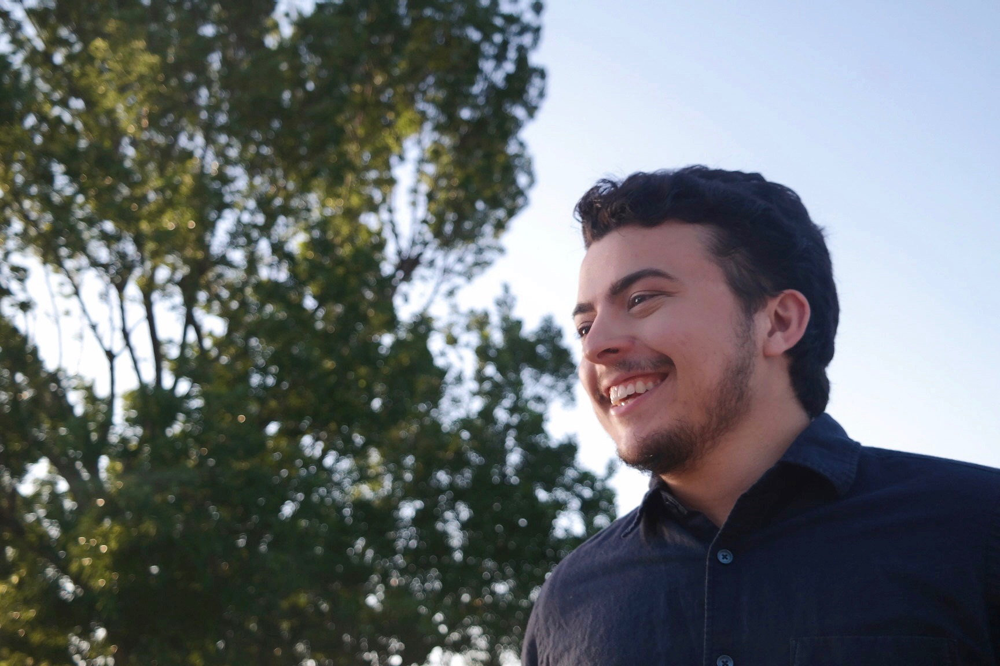
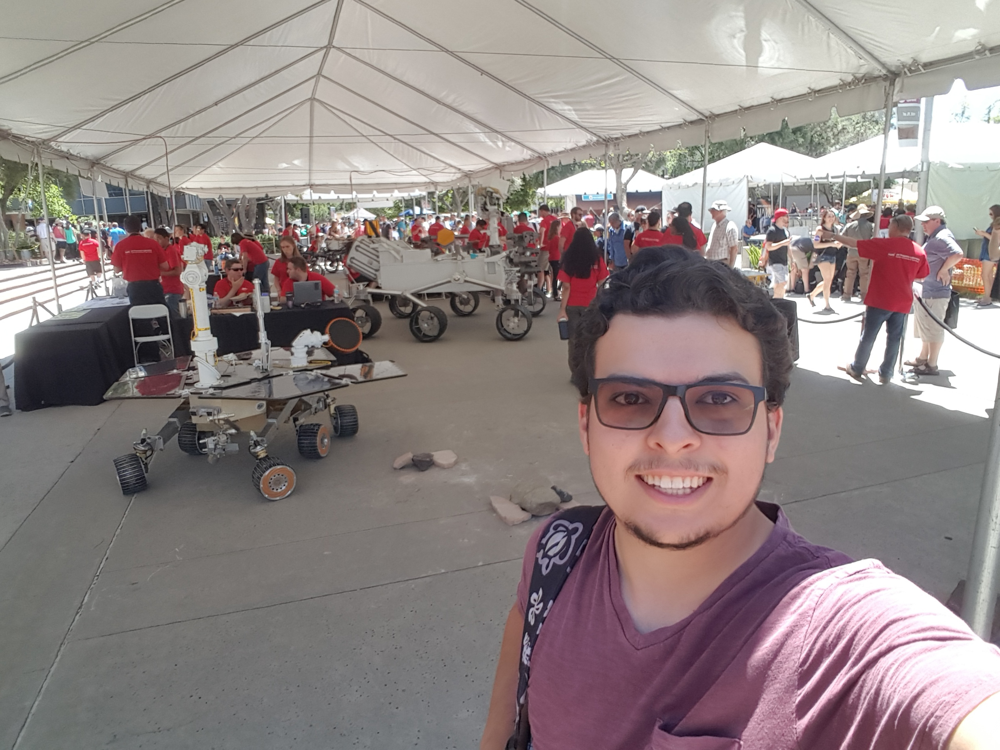
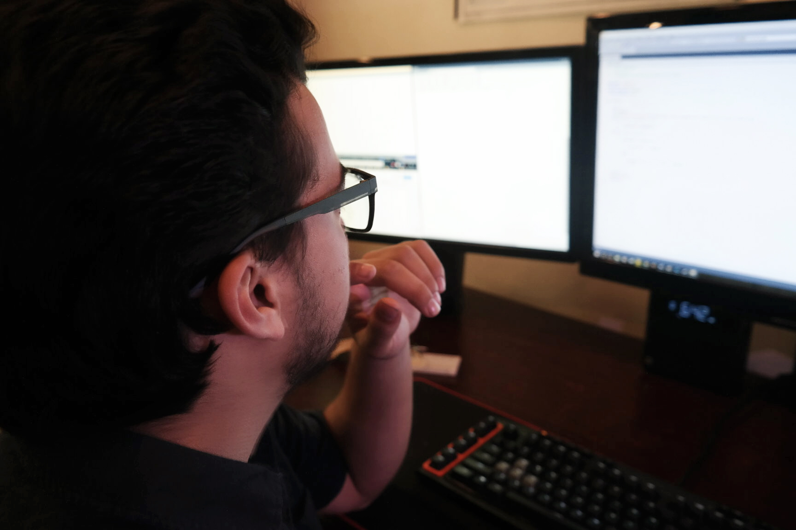

About
Welcome. My name is Aaron Donald Federico Alvarado and I specialize in I.T. and computer programming. I am 25 years old and located in North Hills, California. Currently, I'm attending college pursuing a master’s degree in Computer Science with the goal of becoming a software engineer. I’m a driven individual that will always go above and beyond what I’ve been asked to do and I take pride in a job well done. Please take some time to look through my website to get a better understanding of who I am and have a awesome day!
This wesbite is always under construction as I use it to learn more HTML, CSS, and JavaScript. As such this website is all hard coded with no assist tools like wordpress or squarespace. If you are interested all the html code for this site is aviable on my GitHub on the Recources Tab.
A Breif History
I was born in November of ‘93 in San Diego, but grew up and spent my formative years in the Los Angeles area, where I spent time volunteering at my local church, as well as attending Civil Air Patrol (See resume). Over time I developed a strong interest in computers and programming; shortly there after, I developed a small website where I also created games using Python.
At 20, I joined the United States Air Force. However, due to a health condition, I was medically dishcarged. Once was treated, I began to pursue a computer programming Career.
I began attending college for Computer Science. In February of 2018 I was accepted into the Internship program with the Jet Propulsion Laboratory (JPL). My experience at JPL solidified my desire to become a software engineer.
Goals

My Goal in life is to eventually work at JPL as a software engineer. Having said that I am currently still attending community college, So I have a few years before I reach that goal. In the mean time My goal is to be the hardest working and most dedicated person I can be in whatever I do. For the past 2 years I’ve been working as a Field Computer technician, servicing office computers and networks for car dealerships, making sure the Wifi stays up and keeping the computers (and yes, even the printers) running happy. All the while I am working on expanding my knowledge base in coding, I already know some languages like C++, Python, and HTML, and constantly working to learn more.
Interest
As stated above my Interest in computers started during my late teen years with Me building my first computer. From there I began to become more interested in how computers work and would experiment with them, first with the hardware, then with software in programming. I started off small with a simple guessing games, but eventually grew to more complicated code eventually working as a Intern at JPL working on Python code that could possibly end up on one of the orbiters at Mars.
You may have noticed that I also have a strong Interest in Astronomy. While I do aspire to end up in the space industry later in life, astronomy and stargazing have and always will be one of my favorite hobbies. One of the highlights in my life was a road trip I took to Yellowstone National Park to watch the Total Eclipse in 2017. This experience shook me to the core, and while not changing my outlook on life did enforce my beliefs and a batter understanding at out place in the universe and a appreciation for its beauty (side note: There’s another Eclipse happening in Texas on April 8th 2024 so to any potential employers I would like to have that week off if possible)